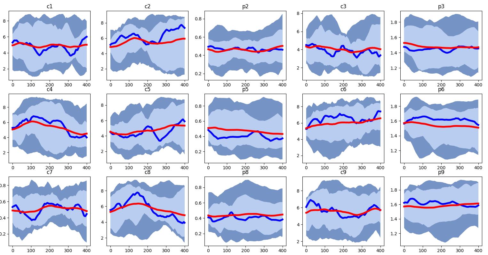

Exploring the Foundations of Economic Behavior: A Minimal Agent-Based Model of Diminishing Marginal Utility
Overview
I simulated economic interactions between agents using as few variables and assumptions as possible. Various computational experiements performed involved varying the intelligence of the agents, the abundance of resources, and the size of the space occupied by the agents.
Why I built this
The goal of this project was to abstract away the details of the world we live in to see if some sort of commonly cited economic principle could be recovered from simulations without these details. If such a principle could be recovered, this minimal model would lend itself much more easily to explaining the phenomena than a real-wrold system with a near infinite number of variables to consider.
Technical highlights
Challenge: Eliminating Assumptions
To create a minimal model, one has to make as few assumptions as possible. While this might be easy to do when abstractly talking about the model, ensuring that an implementation of the model does not include any hdiden assumptions requires significant care and attention. I needed to rewrite several functions throughout this project to undo assumptions I had inadvertenly made earlier in the coding process.
Results
The model as-implemented was unable to recover the principle of diminishing marginal utility, which was the main economic principle being considered.
What I'd do differently
I would focus more on the structure of the problem before implementing it into code. During the latter half of the project, I found myself having to redo bits and pieces that I should have settled early on in the project.
All projects All projects